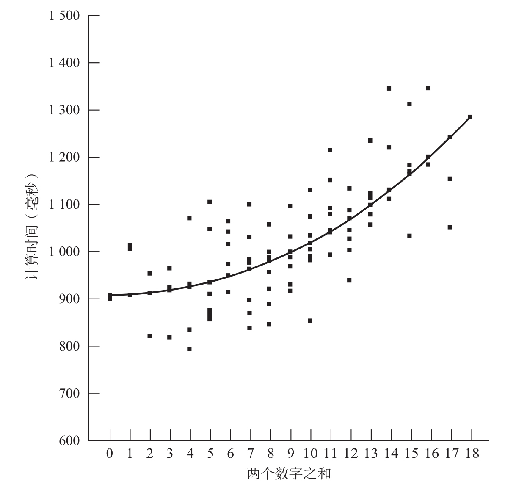

用秒表测一下一个7岁儿童对两个数字进行相加的时间。你会发现，计算所需时间与较小的加数成正比，这是儿童正在使用最小值算法的明确信号10。即使儿童没有流露出任何口头或手指数数的证据，反应时表明，他正在脑中背诵这些数字。在计算“5+1”“5+2”“5+3”或“5+4”时，每增加一个单位需要增加4/10秒：在该年龄，每一个计算步骤大约需要400毫秒。
对于年纪大点的被试会是什么情况呢？当美国卡内基梅隆大学的心理学家盖伊·格伦（Guy Groen）和他的学生约翰·帕克曼（John Parkman）在1972年第一次进行这项实验时，他们困惑地发现，即使是大学生，做加法需要的时间也能通过数值较小的加数来预测11。唯一的区别在于时间增量减小了——每单位间隔20毫秒。如何解释这一发现呢？当然，即便是天才学生也不能以20毫秒一个数字，或每秒50个数字这样令人难以置信的速度数数。于是格伦和帕克曼提出了一种混合模型。在95%的实验中，学生能够直接从记忆中提取结果。在剩下5%的实验中，他们的记忆会崩溃，他们不得不以每400毫秒一个数字的速度数出来。因此，平均而言，每个单位增加的额外时间只有20毫秒。
尽管这个建议别出心裁，但它很快就遇到了挑战。新的发现表明，学生的反应时并没有随加数的增大呈线性增加（见图5-1）12。大数的加法，如“8+9”，花费了不成比例的较长时间。对两数字相加所需时间预测效果最好的，实际上是它们的乘积或它们加和的平方——这两个变量并不符合被试是在数数这一假设。对数数理论的最后一击是：两个数字相乘所用的时间与这两个数字相加基本上相同。事实上，加法和乘法所需时间可以由同样的变量来预测。如果被试是用数数的方法，即使只在5%的实验中这样做，乘法还是应该比加法慢得多。

一个成年人解决加法问题的时间随运算数数值的增大而显著上升。
图5-1 成年人解决加法问题的反应时
资料来源：改绘自Ashcraft, 1995，版权所有©1995 by Erlbaum (UK), Taylor & Francis, Hove, UK，得到作者和出版商的授权。
想摆脱这个困境只有一个途径。1978年，美国克利夫兰州立大学的马克·阿什克拉夫特（Mark Ashcraft）和同事们提出，年轻人在进行加法和乘法运算时不是通过数数13，而是从记忆中的乘法表或加法表中检索结果。但是，运算数越大，查询这个表所需要的时间就越长。检索“2+3”或“2×3”的结果需要不到1秒，但解决“8+7”或“8×7”需要约1.3秒。
数字大小影响记忆提取可能有多个原因。第一个因素，正如在前面章节中解释过的，我们的大脑对数字进行表征的准确性随着数字的增大而迅速下降。第二个因素，可能是学习的顺序，因为学习小数的简单运算往往早于学习大数的复杂运算。第三个因素是训练量。因为数字越大，出现的频率越低，对于数字较大的乘法问题，我们受到的训练较少。马克·阿什克拉夫特和他的同事们总结了儿童的教科书中每个加法或乘法问题出现的频率。结果令人感到不可思议，儿童更多地演练2或3的乘法，而不是7、8或9的乘法，尽管后者更难。
记忆在成人心算中的核心作用现在已经成为人们普遍接受的假设。但这并不意味着成年人没有其他可用的计算策略。事实上，大多数成年人承认他们会使用别的方法，如计算“9×7”时采用“（10×7）-7”的方式，这个因素也导致求解大数的加法和乘法问题的速度变慢。然而，它意味着，在学龄前的几年，心算系统确实发生了重要的升华。儿童突然从简单计数策略所支持的对数量的直觉理解转变到机械算术。如果恰逢此时儿童在数学上第一次遇到严重的困难，也就不足为奇了。突然之间，数学上的进步意味着要在记忆中存储大量的数字知识。大多数儿童会竭尽全力渡过这一难关。然而，正如我们即将看到的，在这个过程中他们往往失去了对算术的直觉。